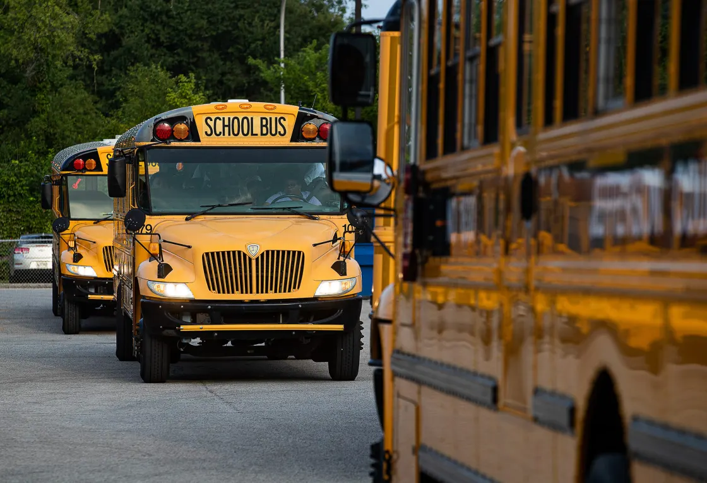
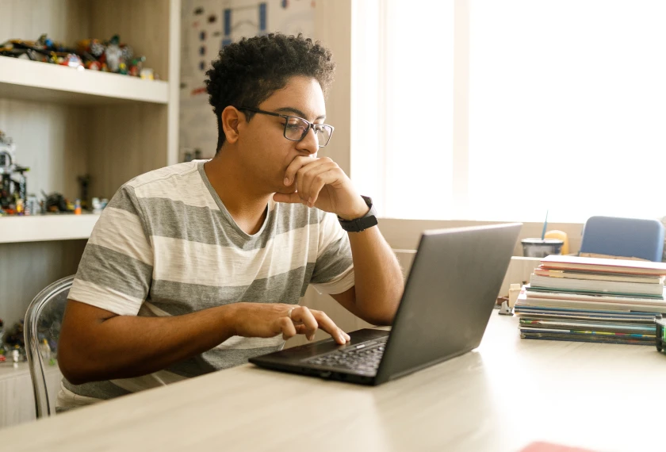
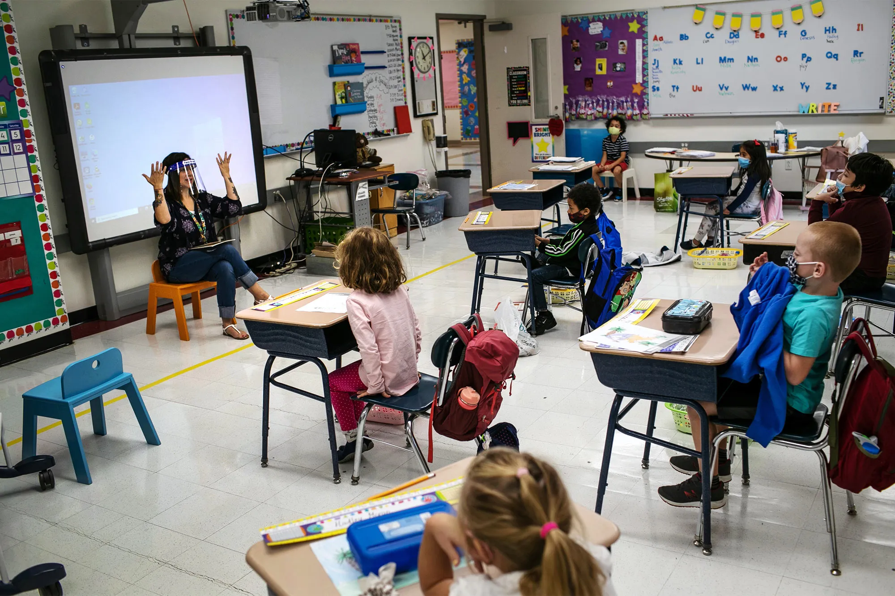

She’d be a senior right now, preparing for graduation in a few months, probably leading her school’s modern dance troupe and taking art classes.
Instead, Kailani Taylor-Cribb hasn’t taken a single class in what used to be her high school since the height of the coronavirus pandemic. She vanished from Cambridge, Massachusetts’ public school roll in 2021 and has been, from an administrative standpoint, unaccounted for since then.
She is among hundreds of thousands of students around the country who disappeared from public schools during the pandemic and didn’t resume their studies elsewhere.
An analysis by The Associated Press, Stanford University’s Big Local News project and Stanford education professor Thomas Dee found an estimated 230,000 students in 21 states whose absences could not be accounted for. These students didn’t move out of state, and they didn’t sign up for private school or home-school, according to publicly available data.
In short, they’re missing.
“Missing” students received crisis-level attention in 2020 after the pandemic closed schools nationwide. In the years since, they have become largely a budgeting problem. School leaders and some state officials worried aloud about the fiscal challenges their districts faced if these students didn’t come back. Each student represents money from the city, state and federal governments.
Gone is the urgency to find the students who left — those eligible for free public education but who are not receiving any schooling at all. Early in the pandemic, school staff went door-to-door to reach and reengage kids. Most such efforts have ended.
“Everyone is talking about declining enrollment, but no one is talking about who’s leaving the system and why,” said Tom Sheppard, a New York City parent and representative on the city's Panel for Educational Policy.
“No one," he said, "is forthcoming.”
Public school enrollment plunged during the pandemic. Our analysis shows where the students went. In the 21 states where data was available, enrollment fell by about 700,000 students between the 2019-2020 and 2021-2022 school years.
Some of those students enrolled in private schools. Across the states in the analysis, private-school enrollment grew by about 103,000 students.
A much bigger group of students switched to home-schooling. The number of children registered for home-schooling surged by around 184,000.
Some families also moved out of state, accounting for some enrollment decline. And birth rates in some states are falling. The population of school-age kids in the states we studied fell by about 183,000, according to census estimates.
That leaves an estimated 230,000 students still unaccounted for in the data. These are children who didn’t sign up for private school or home-school or move out of state. They are missing.
The missing kids identified by AP and Stanford represent far more than a number. The analysis highlights thousands of students who may have dropped out of school or missed out on the basics of reading and school routines in kindergarten and first grade.
That’s thousands of students who matter to someone. Thousands of students who need help re-entering school, work, and everyday life.
“That’s the stuff that no one wants to talk about,” said Sonja Santelises, the chief executive officer of Baltimore’s public schools, speaking about her fellow superintendents.
“We want to say it’s outside stuff” that’s keeping kids from returning to school, she said, such as caring for younger siblings or the need to work. But she worries teens sometimes lack caring adults at school who can discuss their concerns about life.
“That’s really scary,” Santelises said.
Discussion of children's recovery from the pandemic has focused largely on test scores and performance. But Dee says the data suggests a need to understand more about the children who aren’t in school and how that will affect their development.
“This is leading evidence that tells us we need to be looking more carefully at the kids who are no longer in public schools,” he said.
Over months of reporting, the AP learned of students and families avoiding school for a range of reasons. Some are still afraid of COVID-19, are homeless, or have left the country. Some students couldn’t study online and found jobs instead. Some slid into depression.
“Everyone is talking about declining enrollment, but no one is talking about who’s leaving the system and why,” said Tom Sheppard, a New York City parent and representative on the city's Panel for Educational Policy.
During the prolonged online learning, some students fell so far behind developmentally and academically that they no longer knew how to behave or learn at school. Many of these students, while largely absent from class, are still officially on school rosters. That makes it harder to truly count the number of missing students. The real tally of young people not receiving an education is likely far greater than the 230,000 figure calculated by the AP and Stanford.
In some cases, this wasn’t sudden. Many students were struggling well before the pandemic descended.
Kailani, for one, had begun to feel alienated at her school. In ninth grade, a few months before the pandemic hit, she was unhappy at home and had been moved to a different math class because of poor grades.
Kailani has ADHD and says the white teaching assistant assigned to help her focus in her new class targeted her because she’s Black, blaming Kailani when classmates acted up. She also didn’t allow Kailani to use her headphones while working independently in class, something Kailani says was permitted in her special education plan to help her focus.
After that, Kailani stopped attending math. Instead, she cruised the hallways or read in the library.
Ultimately, the pandemic and at-home education relieved the anxiety Kailani felt from being in the school building. Kailani preferred online school because she could turn off her camera and engage as she chose. Her grades improved.
When the school reopened, she never returned.
A Cambridge schools spokesperson looked into Kailani’s complaints. “Several individuals demonstrated great concern and compassion towards her and the challenges she was facing outside of school,” Sujata Wycoff said. She said the district has a “reputation of being deeply dedicated to the education and well-being of our students.”
To assess just how many students have gone missing, AP and Big Local News canvassed every state in the nation to find the most recently available data on both public and non-public schools, as well as census estimates for the school-age population.
Overall, public school enrollment fell by over 700,000 students between the 2019-2020 and 2021-2022 school years in the 21 states plus Washington, D.C., that provided the necessary data.
Those states saw private-school enrollment grow by over 100,000 students. Home-schooling grew even more, surging by more than 180,000.
But the data showed 230,000 students who were neither in private school nor registered for home-school. Their absences could not be explained by population loss, either – such as falling birth rates or families who moved out of state.
States where kindergarten is optional were more likely to have larger numbers of unaccounted-for students, suggesting the missing also include many young learners kept home instead of starting school.
California alone showed over 150,000 missing students in the data, and New York had nearly 60,000. Census estimates are imperfect. So AP and Stanford ran a similar analysis for pre-pandemic years in those two states. It found almost no missing students at all, confirming something out of the ordinary occurred during the pandemic.
The true number of missing students is likely much higher. The analysis doesn’t include data from 29 states, including Texas and Illinois, or the unknown numbers of ghost students who are technically enrolled but rarely make it to class.
For some students, it was impossible to overcome losing the physical connection with school and teachers during the pandemic's school closures.
José Escobar, an immigrant from El Salvador, had only recently enrolled in the 10th grade in Boston Public Schools when the campus shut down in March 2020. His school-issued laptop didn’t work, and because of bureaucratic hurdles the district didn’t issue a new one for several weeks. His father stopped paying their phone bills after losing his restaurant job. Without any working technology for months, he never logged into remote classes.
When instruction resumed online that fall, he decided to walk away and find work as a prep cook. “I can’t learn that way,” he said in Spanish. At 21, he’s still eligible for school in Boston, but says he’s too old for high school and needs to work to help his family.
Another Boston student became severely depressed during online learning and was hospitalized for months. Back home, he refuses to attend school or leave his room despite visits from at least one teacher. When his mother asked him about speaking to a reporter, he cursed her out.
These are all students who have formally left school, and have likely been erased from enrollment databases. Many others who are enrolled are not receiving an education.
In Los Angeles last year, nearly half of students were chronically absent, meaning they missed more than 10% of the school year. For students with disabilities, the numbers are even higher: According to district data, 55% missed at least 18 school days. It’s not clear how many students were absent more than that. The city’s Unified School District did not respond to requests for this data.
Los Angeles officials have spoken openly about attempts to find unschooled students and help remove obstacles that are preventing them from coming to school. Laundry services have been offered, as has help with housing. But for some students and their parents, the problem sits within a school system they say has routinely failed their children.
“Parents are bereft,” said Allison Hertog, who represents around three dozen families whose children missed significant learning when California’s physical classrooms closed for more than a year during the early pandemic.
Ezekiel West, 10, is in fourth grade but reads at a first grade level. Before the pandemic shutdowns, he was shuffled from school to school when educators couldn’t address his impulsive behavior.
During online learning, his mother couldn’t get home internet and struggled with the WiFi hotspots provided by the school. She worked as a home health aide and couldn’t monitor Ezekiel online.
When he returned to school in fall 2021 as a third grader, he was frustrated that his classmates had made more progress as the years passed.
“I did not feel prepared,” he said in a recent phone interview. “I couldn’t really learn as fast as the other kids, and that kind of made me upset.”
An administrative judge ruled Los Angeles’ schools had violated Ezekiel’s rights and ordered the district to give him a spot at a new school, with a special plan to ease him back into learning and trusting teachers. The school didn’t follow the plan, so his mother stopped sending him in October.
“I can’t trust them,” Miesha Clarke said. Los Angeles school officials did not respond to requests for comment on Ezekiel’s case.
Last month, Ezekiel signed up for a public online school for California students. To enroll him, his mother agreed to give up his special education plan. His attorney, Hertog, worries the program won’t work for someone with Ezekiel’s needs and is looking for yet another option with more flexibility.
At least three of the students Hertog has represented, including Ezekiel, have disappeared from school for long periods since in-person instruction resumed. Their situations were avoidable, she said: “It’s pretty disgraceful that the school systems allowed this to go on for so long.”
“I did not feel prepared,” West said in a recent phone interview. “I couldn’t really learn as fast as the other kids, and that kind of made me upset.”
When Kailani stopped logging into her virtual classes during the spring of her sophomore year, she received several emails from the school telling her she’d been truant. Between two to four weeks after she disappeared from Zoom school, her homeroom advisor and Spanish teacher each wrote to her, asking where she was. And the school’s dean of students called her great-grandmother, her legal guardian, to inform her about Kailani’s disappearance from school.
They didn’t communicate further, according to Kailani. She went to work at Chipotle, ringing up orders in Boston’s financial district.
In December, Kailani moved to North Carolina to make a new start. She teaches dance to elementary school kids now. Last month, she passed her high school equivalency exams. She wants to take choreography classes.
But she knows, looking back, that things could have been different. While she has no regrets about leaving high school, she says she might have changed her mind if someone at school had shown more interest and personal attention to her needs and support for her as a Black student.
“All they had to do was take action,” Kailani said. “There were so many times they could have done something. And they did nothing.”
This article is based on data collected by The Associated Press and Stanford University’s Big Local News project. Data was compiled by Sharon Lurye of the AP, Thomas Dee of Stanford’s Graduate School of Education, and Justin Mayo of Big Local News.
The Associated Press education team receives support from the Carnegie Corporation of New York. The AP is solely responsible for all content.
DIGITAL PRESENTATION CREDITS
Design, Graphics, and Development: Eunice Esomonu
Data Analysis: Sharon Lurye, Thomas Dee of Stanford University and Justin Mayo of Big Local News
Illustration: Peter Hamlin
Text Editors: Ted Anthony, Mike Melia and Chrissie Thompson
Photo Editors: Aaron Jackson and Patrick Sison
Video Producer: Sharon Johnson
Digital Producer: Elise Ryan
Creative Direction/Editor: Gerald Rich